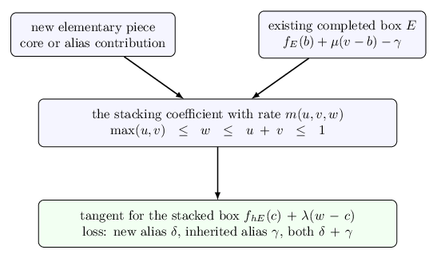

A guide to the manuscript
Read the manuscript PDF. The editable sources and build instructions are available alongside it.
The paper proves the volume conjecture for a specified family of knots built by composing two-strand tangles. It explains the finite quantum invariant, the hyperbolic cells, the estimates needed to control cancellation, and the passage from an augmented link to the final knot complement. This page introduces the construction before giving a route through that proof.
The knot construction, without the shorthand
Start with two strands in a box whose four endpoints are labeled and kept in order. Insert an integer number of signed half-twists. A positive and a negative count give opposite crossing directions. Turn the box through a quarter-turn; this is the basic piece used in the construction.
Two boxes can be stacked in order, and a constructed box can itself be turned. After finitely many such operations, join the remaining outside endpoints by the prescribed cylindrical closure. Following the strands determines whether this produces a knot or a link. The theorem requires one component, with no closed component hidden inside a box.
The notation in the paper abbreviates these operations:
| Notation | Meaning |
|---|---|
| Two strands with signed half-twists. | |
| The quarter-turn of the tangle box , with its endpoint order retained. | |
| The th basic twist piece. Different subscripts carry independent integers. | |
| The ordered stack of and . | |
| The prescribed closure of the four outside endpoints of that stack. |
These are operations on actual tangles. The notation does not mean that formal arithmetic with rational fractions has replaced an isotopy argument.
For the paper’s main family, first stack two basic pieces. Thereafter one may turn a constructed box, stack two constructed boxes, or attach one additional basic piece on either side. The technical notes call a box obtained by these rules completed. This is a recursive name for a class of boxes; it does not mean that a Dehn filling has already been performed. Construct two such boxes and , then close . The paper also handles its stated isolated stacks of at least three basic pieces.
The theorem and its quantifiers
For each fixed permitted construction there is a threshold. Choose the twist integers independently, with either sign, beyond that threshold in absolute value, and choose their parities so that the endpoint pairing gives a knot. Fix all those integers. The theorem then proves
Here is the resulting knot, is the reduced Kashaev invariant at integer level , and the right side is its hyperbolic complement volume. The limit includes even and odd levels and composite levels. The twist counts do not grow with , and no restriction is imposed on their relative sizes. The threshold may depend on the entire construction.
To analyze the geometry, the proof first places an auxiliary crossing circle around each twist region. The resulting augmented link has a convenient decomposition into ideal hyperbolic cells. Filling an auxiliary circle means attaching a solid torus along the prescribed meridian so as to insert the twists. In the knot theorem all auxiliary circles are filled. The cusp of the knot itself remains unfilled. Thus the conclusion is about the knot complement, not a closed three-manifold.
The current strict-tree theorem covers a larger set of expressions than the paper’s recursive family. The results chapter gives its finite admissibility test and explains the difference. The manuscript retains its own theorem; later extensions are not silently attributed to its proof.
How to read the proof
The first part fixes the invariant normalization and derives the finite algebra of the tangle operations. A color is an integer label in that finite calculation. It is not an additional component of the final knot. The source formula retains values and first derivatives at repeated spectral points, which explains the use of Hermite interpolation. Newton polynomials make the allowed integer indices at a product explicit. These support conditions are kept before taking a continuum limit.
The geometric part associates normalized state variables with angles of ideal pyramids and prisms. An ideal vertex lies at infinity in hyperbolic space. Strict angle inequalities produce genuine cells, and the ordered endpoint data determine their face identifications. A strictly concave angle functional has a unique geometric maximum. The proof then follows actual paths on the cusps to identify the meridian and longitude used for filling.
The source estimates address a different issue: a signed sum can be much smaller than the sum of the absolute values of its terms. The exact reflection formula separates a central contribution from extra terms called aliases. The paper bounds all of those terms while preserving their finite supports. Concavity and supporting tangents reduce two important estimates to finite rational certificates.

Near the geometric maximum, a complex asymptotic formula gives an exponential action, a nonzero leading coefficient and a controlled error. The paper calls this a local packet. The estimates outside that neighborhood show why the packet really determines the invariant; locating a critical point by itself would not rule out a missing or canceled contribution.
Finally, the filling transform is evaluated with all its Fourier modes and boundary terms. The marked meridian-longitude convention identifies the real part of its critical action with the volume after filling. This last normalization is what connects the finite invariant to the actual knot constructed at the beginning.
The technical appendices supply the finite algebra, analytic interpolation estimates, certificate details and marked geometric calibration used in this chain. They are intended to make the proof readable without treating links to working notes as substitutes for arguments.
Reproduce the finite certificates
From the repository root, run:
python3 repro/verify.py --list
python3 repro/verify.py --plan
python3 repro/verify.py --output repro/resultsThe first two commands describe the checks. The third runs them serially, writes fresh results and compares them with the committed reference records. The reproduction guide explains the software requirements and outputs; the proof-input map locates the written arguments behind each certificate.
These checks use rational bounds with explicit remainders, not a numerical search for maxima. They verify finite arithmetic used in the proof. They do not mechanically verify the topology, the invariant normalization, or every analytic step of the manuscript.
To build the paper and guide, use the commands in the manuscript source guide. The mathematical illustrations are supplied as editable TikZ sources as well as rendered assets. For the attachment diagram above, download the vector PDF or the TikZ source.